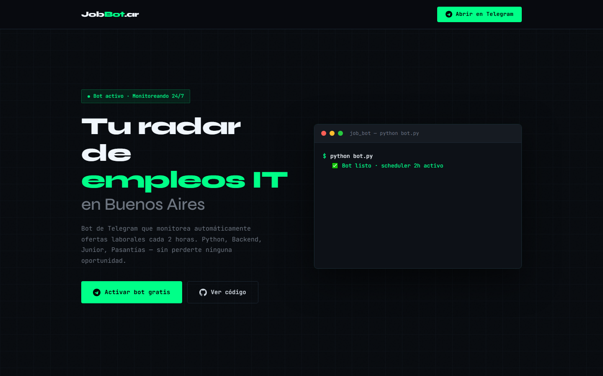
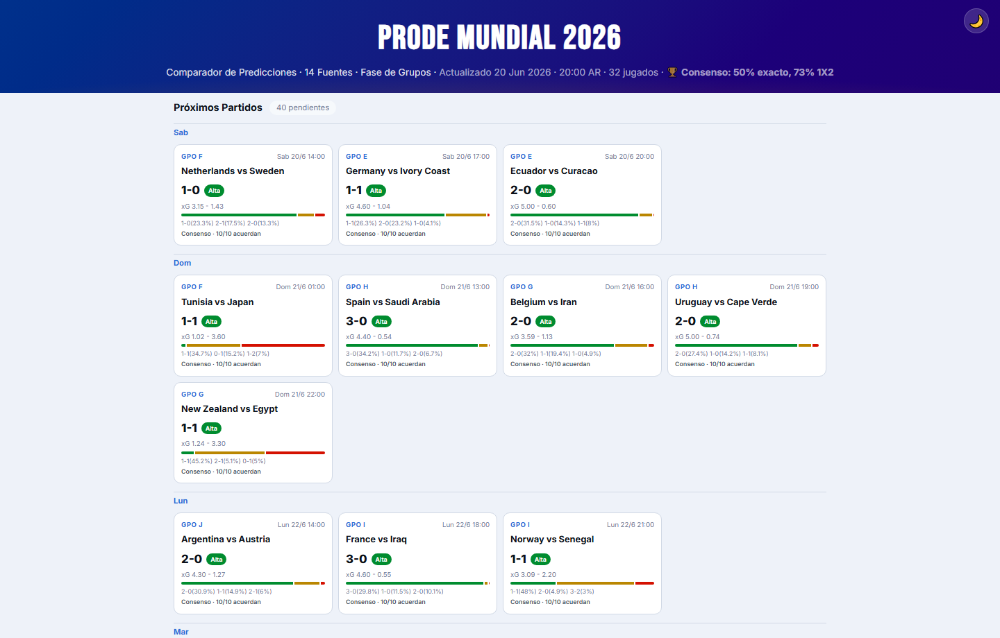
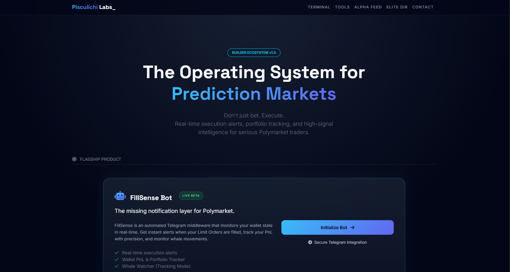

Junior AI Automation & Product Engineer
Disponible para pasantías y roles trainee
ignaciopalmeri
Construyo automatizaciones y productos pequeños con IA, backend y criterio operativo.
Estudio Gestión IT en UADE y busco mi primer rol en IA, automatización o producto. Mi portfolio funciona como una sala de operaciones: proyectos desplegados, agentes, decisiones y pruebas visibles.
Proyectos desplegados
JobBot, Agents System y dashboard de probabilidades.
Stack defendible
Python, FastAPI, PostgreSQL, Linux y GitHub Actions.
Contexto operativo
Caja, inventario, auditorías y mejora de procesos.
Señales rápidas para recruiters: proyectos desplegados, backend real y contexto operativo.
Cómo trabajo con agentes
No vendo “agentes” como magia: los uso como rutas de trabajo verificables.
Ver sistema completoCase study principal
JobBot: de tarea repetitiva a producto full-stack
Lo uso como prueba central porque junta lo que quiero aportar en mi primer rol: entender una operación real, convertirla en flujo de producto y dejar evidencia técnica revisable.

Buscar oportunidades, registrar avances y responder a tiempo se vuelve repetitivo. La automatización sirve solo si mantiene control sobre usuarios, pagos, webhooks y notificaciones.
Dashboard web, API en FastAPI, persistencia, autenticación, webhooks, Telegram y pagos integrados como prototipo desplegado.
Next.js
->
FastAPI
->
PostgreSQL
->
Webhooks
->
Telegram
- Separar UI y API para poder razonar sobre seguridad, datos y experiencia sin mezclar responsabilidades.
- Usar webhooks y notificaciones para mostrar integración real con servicios externos, no solo CRUD.
- Documentar demo, repo, stack y próximos pasos para que un dev pueda auditar el alcance.
Demo pública
Repositorio revisable
CV y portfolio conectados
Estaciones de evidencia
Tres señales más para distintos públicos
Después del caso principal, estas piezas muestran rango: datos, producto experimental y prueba verificable.

Datos / simulación
Sports Probability Dashboard
Modelo de probabilidades con Python, escenarios deportivos y una interfaz desplegada para usuarios no técnicos.
Prueba: demo pública + repositorio + lógica inspeccionable. Abrir
Producto experimental
Pisculichi Labs
Laboratorio de bots, alertas y herramientas para mercados predictivos. Muestra exploración rápida sin vender humo.
Prueba: beta desplegada + experimentos de automatización. Abrir
Verificación
Evidencia revisable
GitHub, CV, capturas, tests Playwright y rutas de agentes conectan el relato con artefactos concretos.
Prueba: navegador verificado, repos públicos y CV descargable. InspeccionarProyectos destacados
Cuatro piezas: producto, trabajo, analytics y lab.
JobBot
Full-stack automation prototype
Next.js, FastAPI, PostgreSQL, auth, webhooks, Telegram y pagos.
Abrir proyecto Agents System Workflow systemMapa visual de agentes, reglas, memoria y rutas de trabajo.
Explorar sistema Sports Probability Dashboard Probability dashboardPython, escenarios deportivos y dashboard desplegado.
Abrir proyecto Pisculichi Labs Product labExperimentos de bots, alertas y herramientas web.
Abrir proyectoEstudiante IT orientado a automatización operativa
Sobre mí
Convierto operaciones repetitivas en software pequeño, desplegado y revisable.
Estudio Gestión IT en UADE y estoy construyendo mi primera experiencia profesional en tecnología. Uso IA para acelerar la implementación, pero el valor que busco desarrollar está en decidir qué vale la pena construir y cómo hacerlo útil.
Me interesa la intersección entre software, economía, incentivos y comportamiento humano. Leo y estudio fuera de la programación porque los buenos productos no nacen solo de sintaxis: nacen de entender sistemas, usuarios y restricciones.
Mi experiencia en atención al cliente y operaciones me dio presión real, caja, inventario y auditorías. Quiero llevar esa base a soporte IT, QA trainee, automatización o startups donde pueda convertir procesos repetitivos en software revisable.
Certificaciones
Credenciales verificables y aprendizaje aplicado para sostener lo que muestro en proyectos.
Verificada
Red Hat
Visible
Cisco CCNA 1
Base Linux, terminal, permisos y administración de sistemas para trabajar con entornos reales.
Ver credencial Verificada Claude CodeUso de asistentes de IA para desarrollo, revisión, contexto de repo y flujos de implementación verificables.
Ver credencialFundamentos de redes, direccionamiento, conectividad y troubleshooting para comprender infraestructura.
Sin link público directoStack y herramientas
Uso principal
Python
FastAPI
JavaScript
TypeScript
Linux
Git
Producto y datos
Dashboards
Telegram Bots
SQL
Automation
Business Process Modeling
Corporate Finance Fundamentals
Inventory & Cash Flow Auditing
AI-Assisted Development
AI-assisted workflows
Playwright
Obsidian
README handoffs
Prompted code review
IA aplicada
Actividad verificable
GitHub como bitácora de trabajo
Actividad pública del perfil nachopalmeri: demos, repos y continuidad real.